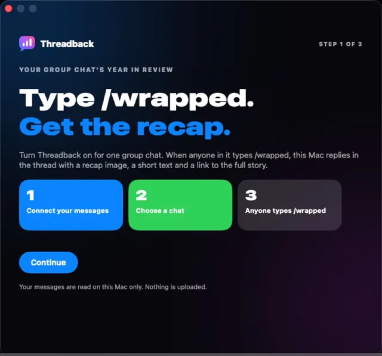
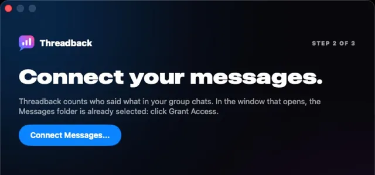
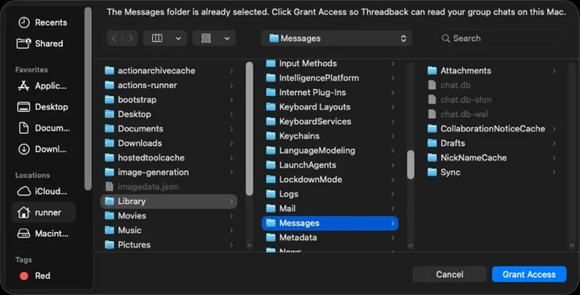
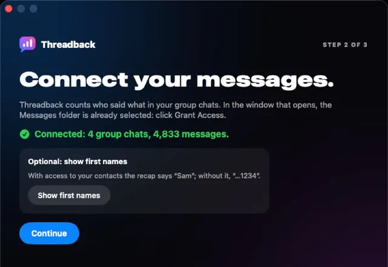
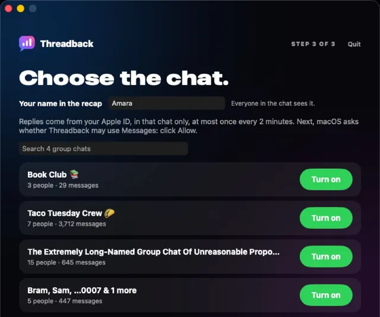
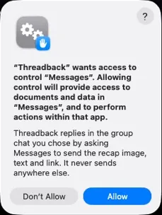
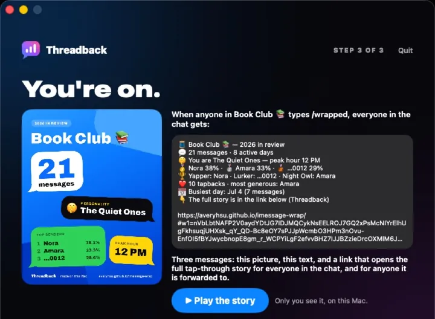

The Mac app
Your group chat asks. Your Mac answers.
A small, free app for your Mac that works with iMessage group chats. Turn it on for one chat, and whenever anyone in it types /wrapped, your Mac replies in the thread with a recap of the chat’s year.
What you need
- A Mac with macOS 14 or later
- Signed in to Messages
- About five minutes
This part needs a Mac
You are on another device. The app runs on a Mac that is signed in to Messages, and that Mac then answers for everyone in the chat. Open this page on that Mac to download it. You can read the steps below first.
Back to the main page, where you can play or make a recap on any device.
Free. Then follow the five steps below; this page stays open next to you.
The download is not public yet. Follow the project on GitHub to hear when it is.
Step 1 of 5
Open the download and drag the app to Applications
- Open your Downloads folder (or click the download in your browser’s list of downloads) and double-click the file you just downloaded.
- A window opens by itself, with the app (a purple square with a speech bubble) on the left and an Applications folder on the right.
- Drag the app onto Applications.
Why Applications: opened from there, the app remembers the permissions you give it in step 4. The window’s own three steps are the same as this page’s next steps.
Something else happened?
- The browser asks whether to allow downloads from this site.
- Click Allow, then click Download for Mac again.
- I got a zip file instead, or no window opened.
- Double-click the zip until the app’s icon appears. Then, in Finder, open the Go menu at the top of the screen, choose Applications, and drag the app into that window.
- Afterwards there is a disk named after the app in Finder’s sidebar.
- That is the download, opened. Once the app is in Applications, click the eject arrow next to it. The downloaded file can go in the Trash.
Open it. macOS will stop you once.
- In Applications, double-click the app.
- macOS does not open it. Instead it shows a message saying it could not check the app for malware.
- Click Done, the lower button. Do not click the blue Move to Trash button, and do not press Return: that is the blue button too.
“the app” Not Opened
Apple could not verify “the app” is free of malware that may harm your Mac or compromise your privacy.
Move to Trash DoneClick this oneWhy this happens
The app is free and its code is public, but it is not signed through Apple’s paid developer program, so macOS cannot vouch for it. The project does not pay Apple’s yearly fee; instead, anyone can read the code on GitHub. If you would rather not trust it, stop here and move it to the Trash: it has not run.
Something else happened?
- It says
“the app” is damaged and can’t be opened. You should move it to the Trash.
- That message has no way past it: the copy you have was broken on the way. Move it to the Trash, download it again from this page and drag the new copy to Applications. If the new copy says the same, please tell us on GitHub.
- Nothing appeared at all.
- The app may already be open: look for its icon in the Dock, or a speech bubble in the menu bar at the top right of the screen. If its setup window is showing, skip to step 4.
- I clicked Move to Trash by mistake.
- No harm done. Download it again and start from step 1.
Tell macOS it is fine
Your browser asks whether this page may open System Settings. Click Allow (or Open).
- In the window that opens, scroll down to Security. There is a line saying
“the app” was blocked to protect your Mac.
- Click Open Anyway next to it.
- Type the password you use to log in to this Mac, or use Touch ID.
- macOS asks one last time: click Open Anyway. The app opens. This was the only time.
Privacy & Security
Security
The button did nothing?
Open the same place by hand: click the Apple menu in the top-left corner of the screen, choose System Settings, then click Privacy & Security in the list on the left, and scroll down.
Something else happened?
- There is no line about the app, and no Open Anyway.
- macOS only shows it for about an hour after it stopped the app. Open the app again from Applications first (click Done again), then come back to this step.
- It asks for a password I do not know.
- macOS wants the password of someone who manages this Mac. Ask them to type it, or set the app up from their account.
- The browser said nothing and no window opened.
- Use the way by hand above: Apple menu, System Settings, Privacy & Security.
Set it up: a few clicks
The app opens with its own short setup. Every part of it is one click; the yellow ring shows where.
-

1 Click Continue.
-

2 Click Connect Messages…
-

3 A window opens with the Messages folder already selected. Click Grant Access.
-

4 It says Connected. Click Continue. (Optional first: Show first names, then Allow, so the recap says “Sam” instead of a phone number.)
-

5 Click Turn on next to one group chat. The app says exactly what a reply will be; click Turn on again to agree.
-

6 macOS asks whether the app may control Messages. Click Allow: this is how it sends the reply.
Then click Done in the app. Its window closes, and the app keeps running in the menu bar at the top of the screen. All chats in these pictures are invented.
Something else happened?
- The Messages folder window looks empty, or its files are grey.
- That is normal: you are choosing the folder, not a file. Click Grant Access. If the window shows some other folder, press ⌘ ⇧ G, type
~/Library/Messages, press Return, then click Grant Access. - A red message appears after Grant Access.
- Click Use Full Disk Access instead in the app and follow what it says.
- An orange box says the app is running from the download.
- Click Move to Applications in that box, or quit the app from its menu-bar icon, drag it to Applications and open it from there.
- The list of group chats is empty.
- Open Messages on this Mac and check that you are signed in and that your group chats show up there. Then open the app again from its menu-bar icon (Set up…).
- I clicked Don’t Allow.
- Open System Settings, then Privacy & Security, then Automation. Find the app and switch on Messages under it.
That is it. Try it in the chat.
Anyone in that chat, you included, types /wrapped as the whole message. Within a few seconds your Mac replies in the thread.

-
What the reply is
Three messages: a picture of the chat’s year, a short text (how many messages, who talked most, the busiest day, the tapbacks), and a link that plays the full story in any browser.
-
It comes from you
The reply is sent from your Apple ID, like a message you typed. It answers only in the chat you turned on, and at most once every two minutes.
-
Your Mac has to be awake
It answers while this Mac is on, awake and logged in. Switch on Open the app when I log in on its last screen so it starts by itself.
-
How to turn it off
Open the app again from Applications: its window has Turn off and Quit the app. To remove it for good, quit it and move it from Applications to the Trash.
-
What never leaves this Mac
Your messages. The app reads and counts them on this Mac and has no server to upload to. The only thing it ever sends is the reply, into the chat you chose.
The link in the reply is the recap: it holds the chat’s name, first names and the counts, never the words of any message. Anyone the link is passed on to can open it, so treat it like a screenshot of the chat’s numbers.
Something else happened?
- Nothing happens after
/wrapped. -
- Is the Mac awake, and is the speech-bubble icon in its menu bar? If not, open the app from Applications.
- Was
/wrappedthe whole message, in the chat you turned on? - Did it already answer in the last two minutes? Wait a moment and try again.
- Click the menu-bar icon: it shows what happened last. If it says the reply was not confirmed, choose send by hand; macOS sometimes does not deliver a message an app sends to a group chat, and then the app hands it to you to send.
- I installed a newer version and it stopped answering.
-
- Open the app from Applications after every update. Because it is not signed through Apple’s paid program, macOS treats each new version as a new app: expect to pick the Messages folder again and to click Allow again when macOS asks whether it may control Messages.